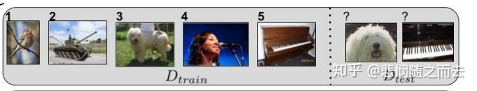
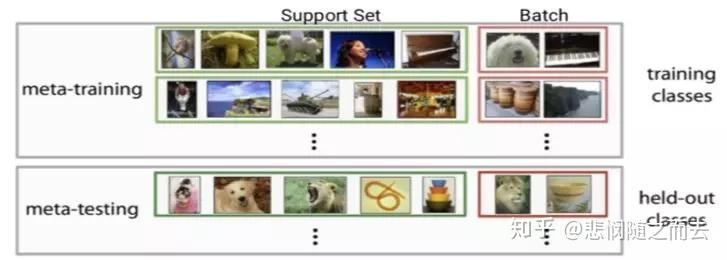
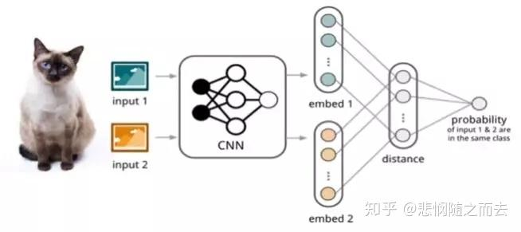

Few-shot Learning 是【2】元学习 meta-learning在监督学习领域的应用。Meta Learning，又称为learning to learn，该算法旨在让模型学会“学习”，能够处理类型相似的任务，而不是只会单一的分类任务。举例来说，对于一个LOL玩家，他可以很快适应王者荣耀的操作，并在熟悉后打出不错的战绩。人类利用已经学会的东西，可以更快的掌握一些新事物，而传统的机器学习方法在这方面的能力还有所欠缺，因此提出了元学习这个概念。
Meta learning 中，在 meta training 阶段将数据集分解为不同的 meta task，去学习类别变化的情况下模型的泛化能力，在 meta testing 阶段，面对全新的类别，不需要变动已有的模型，就可以完成分类。
2、算法介绍
在 few-shot learning 中有一个术语叫做 N-way K -shot 问题。形式化来说，few-shot 的训练集中包含了很多的类别，每个类别中有多个样本。在训练阶段，会在训练集中随机抽取 N 个类别，每个类别 K 个样本（总共 NK 个数据），构建一个 meta-task，作为模型的支撑集（support set）输入；再从这 N 个类中剩余的数据中抽取一批（batch）样本作为模型的预测对象（batch set）。即要求模型从 NK 个数据中学会如何区分这 N 个类别，这样的任务被称为 N-way K-shot 问题。

如图所示就是一个5 way 1 shot 模型训练过程中，每次训练都会采样得到不同 meta-task，所以总体来看，训练包含了不同的类别组合，这种机制使得模型学会不同 meta-task 中的共性部分，比如如何提取重要特征及比较样本相似等，忘掉 meta-task 中 task 相关部分。通过这种学习机制学到的模型，在面对新的未见过的 meta-task 时，也能较好地进行分类
图2展示的是一个 2-way 5-shot 的示例，可以看到 meta training 阶段构建了一系列 meta-task 来让模型学习如何根据 support set 预测 batch set 中的样本的标签；meta testing 阶段的输入数据的形式与训练阶段一致（2-way 5-shot），但是会在全新的类别上构建 support set 和 batch。

图2 2-way 5-shot示例 最初的few-shot learning研究领域主要集中在图像领域，大致可分为三类：Mode Based，Metric Based 和 Optimization Based。Model Based方法
Santoro 等人 [1]提出使用记忆增强的方法来解决 Few-shot Learning 任务。基于记忆的神经网络方法早在 2001 年被证明可以用于 meta-learning。他们通过权重更新来调节 bias，并且通过学习将表达快速缓存到记忆中来调节输出。然而，利用循环神经网络的内部记忆单元无法扩展到需要对大量新信息进行编码的新任务上。因此，需要让存储在记忆中的表达既要稳定又要是元素粒度访问的，前者是说当需要时就能可靠地访问，后者是说可选择性地访问相关的信息；另外，参数数量不能被内存的大小束缚。神经图灵机（NTMs）和记忆网络就符合这种必要条件。
文章基于神经网络图灵机（NTMs）的思想，因为 NTMs 能通过外部存储（external memory）进行短时记忆，并能通过缓慢权值更新来进行长时记忆，NTMs 可以学习将表达存入记忆的策略，并如何用这些表达来进行预测。由此，文章方法可以快速准确地预测那些只出现过一次的数据。
基于 LSTM 等 RNN 的模型，将数据看成序列来训练，在测试时输入新的类的样本进行分类。具体地，在 t 时刻，模型输入（ ），也就是在当前时刻预测输入样本的类别，并在下一时刻给出真实的 label，并且添加了 external memory 存储上一次的 x 输入，这使得下一次输入后进行反向传播时，可以让 y (label) 和 x 建立联系，使得之后的 x 能够通过外部记忆获取相关图像进行比对来实现更好的预测。
Metric Based方法
Few-shot Learning最大的问题就是过拟合。 如果在 Few-shot Learning 的任务中去训练普通的基于 cross-entropy 的神经网络分类器，那么几乎肯定是会过拟合，因为神经网络分类器中有数以万计的参数需要优化。
相反，很多非参数化的方法（最近邻、K-NN、Kmeans）是不需要优化参数的，因此可以在 meta-learning 的框架下构造一种可以端到端训练的 few-shot 分类器。该方法是对样本间距离分布进行建模，使得同类样本靠近，异类样本远离。下面介绍相关的方法。
如图 3所示，孪生网络（Siamese Network）[2] 通过有监督的方式训练孪生网络来学习，然后重用网络所提取的特征进行 one/few-shot 学习。

. 具体的网络是一个双路的神经网络，训练时，通过组合的方式构造不同的成对样本，输入网络进行训练，在最上层通过样本对的距离判断他们是否属于同一个类，并产生对应的概率分布。在预测阶段，孪生网络处理测试样本和支撑集之间每一个样本对，最终预测结果为支撑集上概率较高的类别。相比孪生网络，匹配网络（Match Network）[2] 为支撑集和 Batch 集构建不同的编码器，最终分类器的输出是支撑集样本和 测试样本之间预测值的加权求和。
上述方法是Few-shot Learning的一些初始应用，由于这个理论相对比较新，应用暂时集中在图像分类、图像识别、文本分类等领域，应用还比较窄，这些方法只是简单介绍，事实上后面还有许多进一步的优化和更复杂的网络构建。但由于与要研究的inbody数据预测关系不是很大，就没有深入去了解
3、Meta learning
在进一步了解小样本学习前，先得了解元学习的相关内容。
元学习的核心想法是先学习一个先验知识（prior），这个先验知识对解决 few-shot learning 问题特别有帮助。Meta-learning 中有 task 的概念，比如上面图片讲的 5-way 1-shot 问题就是一个 task，我们需要先学习很多很多这样的 task，然后再来解决这个新的 task 。重要的一点，这是一个新的 task。分类问题中，这个新的 task 中的类别是之前我们学习过的 task 中没有见过的！ 在 Meta-learning 中之前学习的 task 我们称为 meta-training task，我们遇到的新的 task 称为 meta-testing task。因为每一个 task 都有自己的训练集和测试集，因此为了不引起混淆，我们把 task 内部的训练集和测试集一般称为 support set 和 query set
Meta-learning 方法的分类标准有很多，为解决过拟合问题，有下面常见的3种方法
- 学习微调 (Learning to Fine-Tune)
- 基于 RNN 的记忆 (RNN Memory Based)
- 度量学习 (Metric Learning)